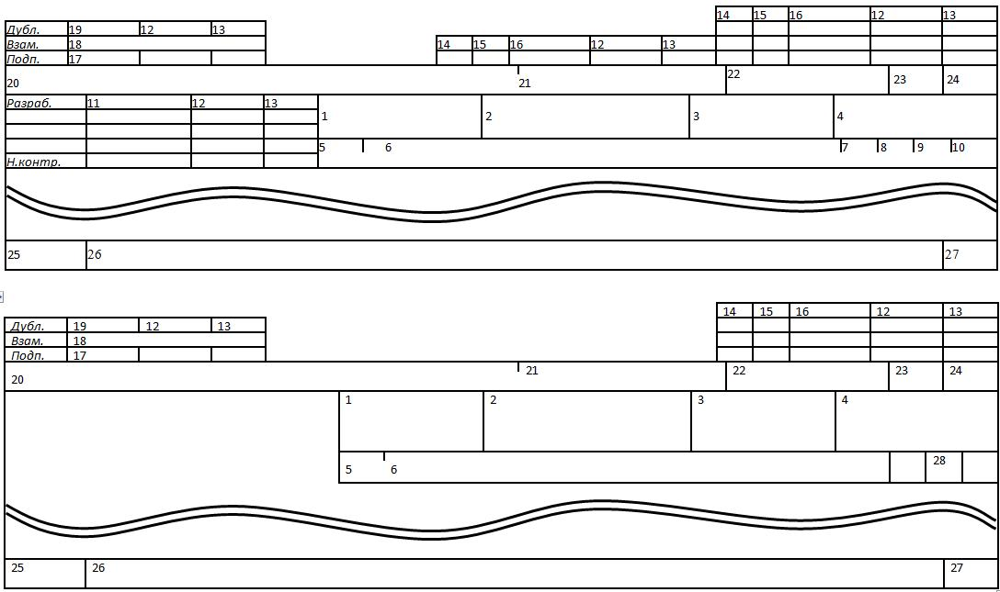

4.6 Основні написи (ГОСТ 3.1103-82)
Основний
напис призначений для вказівки призначення й області застосування документа
(комплекту документації, комплекту документів на технологічний процес або
операцію) і для відповідного оформлення його із вказівкою осіб, що беруть
участь, їхніх підписів і дати виконання.
Основний
напис варто застосовувати для всіх видів документів.
Основний
напис представлений у вигляді інформаційних блоків (далі -
блоків):
-
блок
адресної (пошукової) інформації;
-
блок
складу виконавців;
-
блок
внесення змін;
-
блок
додаткової інформації;
-
блок
допоміжної інформації;
-
блок
виду й призначення документа.
Залежно
від призначення й способу виконання документа блоки основного напису можуть мати
різні форми.
Розташування
блоків на першому (заголовному) листі або на наступних листах документів одного
виду залежить від:
-
виду
документа і його призначення;
-
формату
документа;
-
застосовуваного
способу печатки бланків документів;
-
розташування
поля підшивки.
Сполучення
блоків, розташованих у певному порядку, утворить основний напис
документа.
Основний
напис розміщається у верхній і нижній частинах форм бланків
документів.
Усі
графи основного напису на рисунку 4.1 пронумеровані, а в таблиці 4.4 наведено
позначення цих граф.

Рисунок
4.1 - Основний напис форм технологічних документів
Таблиця
4.4 - Графи
основного напису технологічних документів
|
Номер
графи |
Зміст
графи |
|
1 |
Коротке
найменування або умовне позначення підприємства (організації) –
розроблювача документа (документів). |
|
2* |
Для
одиничного технологічного процесу (операції) або окремих видів документів
(ВМ, ВТМ і т.д.) - позначення виробу (деталі, складальної одиниці); для
типового технологічного процесу (операції) - код ступеню класифікації по
конструкторському класифікаторі; для групового технологічного процесу
(операції) - графи не заповнюють. |
|
3* |
Для
типових і групових технологічних процесів - код класифікаційних угруповань
технологічних ознак, загальних для групи деталей (складальних одиниць,
виробів), що характеризують застосовуваний метод виготовлення або
ремонту. Для
типових і групових технологічних операцій - код
операції. |
|
4* |
Позначення
документа Допускається
в графі вказувати позначення комплекту документів: для
МК, КТП, КТТП, коли комплект документів оформляється без титульного
листа; для всіх видів документів, що входять у комплект і не підлягають обробці засобами обчислювальної техніки |
|
5* |
Загальна
одиниця нормування, прийнята для всього технологічного процесу.
|
|
6 |
Для
документів, розроблювальних на одиничний технологічний процес (операцію)
або окремі види документів (ВМ, ВТМ і т.д.) - найменування виробу (деталі,
складальної одиниці) по основному конструкторському документу;
для
типового технологічного процесу (операції) - найменування групи виробів
(деталей, складальних одиниць), що характеризуються спільністю
конструктивних ознак, наприклад «вали», «втулки» «шестірні» і
т.д.; для
групового технологічного процесу (операції) - найменування застосовуваного
методу, наприклад «хромування» і т.п. Допускається
графи не заповнювати для ТИ, ВТП (ВТО), КК і т.д. |
|
7 |
Номер
цеху, у якому виконується операція |
|
8 |
Номер
ділянки, на якому виконується операція |
|
9 |
Номер
робочого місця (конвеєра, потокової лінії або складу), на якому
виконується операція |
|
10 |
Номер
операції, виконуваної в технологічній послідовності виготовлення або
ремонту виробу (включаючи контроль і переміщення). Допускається
графи не заповнювати для окремих видів документів, що поширюють свої
вимоги не на одну, а на декілька операцій або документів, що є загальними
для різних комплектів. Допускається
замість інформації, внесеної в графи 7-10, указувати код робочого
місця |
|
11 |
Прізвища
осіб, що беруть участь у розробці й оформленні
документа |
|
12 |
Підписи
осіб, відповідальних за розробку, оформлення документа, за внесення в
нього змін і архівних даних. |
|
13 |
Дата
підписання документа |
|
14* |
Порядковий
номер зміни документа |
|
15* |
Відмітка
про заміну або введення листа документа |
|
16* |
Порядковий
реєстраційний номер повідомлення |
|
17* |
Інвентарний
номер оригіналу |
|
18* |
Інвентарний
номер оригіналу, замість якого випущений даний
оригінал |
|
19* |
Інвентарний
номер дубліката |
|
20* |
Вказівка
додаткової інформації (по застосовності у виробі, варіантам виконання й
т.п.). |
|
21* |
Позначення
номера виробу (складальної одиниці), з якого вводиться даний документ.
|
|
22 |
Позначення
основного документа (комплекту документів на технологічний процес або
операцію, комплект документації), куди входить даний документ (комплект
документів на технологічний процес або
операцію) |
|
23 |
Загальна
кількість листів документа |
|
24 |
Порядковий
номер листа документа |
|
25 |
Умовне
позначення виду документа |
|
26 |
Найменування
документа або коротке найменування технологічного методу формоутворення,
обробки, складання й т.д. (процесу або операції), що описується в даному
документі. |
|
27 |
Номер
листа в комплекті документів |
|
28 |
Літера,
привласнена документу (комплекту документів), по стадії
розробки |